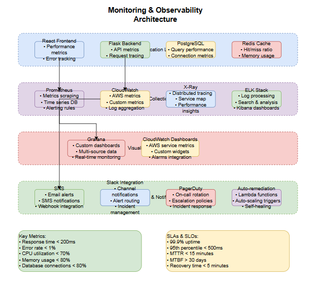

Set up comprehensive monitoring, logging, and alerting for the application and infrastructure components using AWS CloudWatch, Prometheus, and Grafana.

# Create CloudWatch alarms for ECS
aws cloudwatch put-metric-alarm \
--alarm-name "ECS-CPU-High" \
--alarm-description "ECS CPU utilization is high" \
--metric-name CPUUtilization \
--namespace AWS/ECS \
--statistic Average \
--period 300 \
--threshold 80 \
--comparison-operator GreaterThanThreshold \
--evaluation-periods 2 \
--alarm-actions arn:aws:sns:us-east-1:ACCOUNT:enterprise-alerts \
--dimensions Name=ServiceName,Value=enterprise-service Name=ClusterName,Value=enterprise-cluster
# Memory utilization alarm
aws cloudwatch put-metric-alarm \
--alarm-name "ECS-Memory-High" \
--alarm-description "ECS Memory utilization is high" \
--metric-name MemoryUtilization \
--namespace AWS/ECS \
--statistic Average \
--period 300 \
--threshold 85 \
--comparison-operator GreaterThanThreshold \
--evaluation-periods 2 \
--alarm-actions arn:aws:sns:us-east-1:ACCOUNT:enterprise-alerts
# Application Load Balancer alarms
aws cloudwatch put-metric-alarm \
--alarm-name "ALB-TargetResponseTime-High" \
--alarm-description "ALB target response time is high" \
--metric-name TargetResponseTime \
--namespace AWS/ApplicationELB \
--statistic Average \
--period 300 \
--threshold 2 \
--comparison-operator GreaterThanThreshold \
--evaluation-periods 3 \
--alarm-actions arn:aws:sns:us-east-1:ACCOUNT:enterprise-alerts
# Python Flask application metrics
import boto3
from datetime import datetime
cloudwatch = boto3.client('cloudwatch')
def put_custom_metric(metric_name, value, unit='Count'):
try:
cloudwatch.put_metric_data(
Namespace='Enterprise/Application',
MetricData=[
{
'MetricName': metric_name,
'Value': value,
'Unit': unit,
'Timestamp': datetime.utcnow()
}
]
)
except Exception as e:
print(f"Error sending metric: {e}")
# Usage in Flask app
@app.route('/api/items', methods=['POST'])
def create_item():
try:
# Business logic here
item = create_new_item(request.json)
# Send custom metric
put_custom_metric('ItemsCreated', 1)
put_custom_metric('APIRequests', 1)
return jsonify(item), 201
except Exception as e:
put_custom_metric('APIErrors', 1)
return jsonify({'error': str(e)}), 500
# Database connection monitoring
def monitor_db_connections():
active_connections = get_active_db_connections()
put_custom_metric('DatabaseConnections', active_connections, 'Count')
query_time = measure_query_performance()
put_custom_metric('DatabaseQueryTime', query_time, 'Milliseconds')
# Create log groups
aws logs create-log-group --log-group-name /ecs/enterprise-app/backend
aws logs create-log-group --log-group-name /ecs/enterprise-app/frontend
aws logs create-log-group --log-group-name /aws/rds/instance/enterprise-db/error
# Set retention policy
aws logs put-retention-policy \
--log-group-name /ecs/enterprise-app/backend \
--retention-in-days 30
# Create metric filters
aws logs put-metric-filter \
--log-group-name /ecs/enterprise-app/backend \
--filter-name ErrorCount \
--filter-pattern "[timestamp, request_id, level=\"ERROR\", ...]"\
--metric-transformations \
metricName=ApplicationErrors,metricNamespace=Enterprise/Application,metricValue=1
# Create subscription filter for real-time processing
aws logs put-subscription-filter \
--log-group-name /ecs/enterprise-app/backend \
--filter-name ErrorProcessor \
--filter-pattern "ERROR" \
--destination-arn arn:aws:lambda:us-east-1:ACCOUNT:function:ProcessLogErrors
# Python structured logging configuration
import json
import logging
from datetime import datetime
class JSONFormatter(logging.Formatter):
def format(self, record):
log_entry = {
'timestamp': datetime.utcnow().isoformat(),
'level': record.levelname,
'logger': record.name,
'message': record.getMessage(),
'module': record.module,
'function': record.funcName,
'line': record.lineno
}
# Add extra fields if present
if hasattr(record, 'user_id'):
log_entry['user_id'] = record.user_id
if hasattr(record, 'request_id'):
log_entry['request_id'] = record.request_id
if hasattr(record, 'duration'):
log_entry['duration'] = record.duration
return json.dumps(log_entry)
# Configure logger
logger = logging.getLogger('enterprise_app')
handler = logging.StreamHandler()
handler.setFormatter(JSONFormatter())
logger.addHandler(handler)
logger.setLevel(logging.INFO)
# Usage in application
@app.before_request
def before_request():
g.start_time = time.time()
g.request_id = str(uuid.uuid4())
@app.after_request
def after_request(response):
duration = time.time() - g.start_time
logger.info(
"Request completed",
extra={
'request_id': g.request_id,
'method': request.method,
'path': request.path,
'status_code': response.status_code,
'duration': duration * 1000, # milliseconds
'user_id': getattr(g, 'user_id', None)
}
)
return response
# prometheus.yml
global:
scrape_interval: 15s
evaluation_interval: 15s
rule_files:
- "alert_rules.yml"
alerting:
alertmanagers:
- static_configs:
- targets:
- alertmanager:9093
scrape_configs:
- job_name: 'prometheus'
static_configs:
- targets: ['localhost:9090']
- job_name: 'enterprise-app'
ec2_sd_configs:
- region: us-east-1
port: 8080
filters:
- name: tag:Environment
values: [production]
- name: tag:Application
values: [enterprise-app]
relabel_configs:
- source_labels: [__meta_ec2_tag_Name]
target_label: instance
- source_labels: [__meta_ec2_tag_Environment]
target_label: environment
- job_name: 'node-exporter'
ec2_sd_configs:
- region: us-east-1
port: 9100
filters:
- name: tag:Monitoring
values: [enabled]
- job_name: 'cadvisor'
static_configs:
- targets: ['cadvisor:8080']
- job_name: 'postgres-exporter'
static_configs:
- targets: ['postgres-exporter:9187']
# Flask application with Prometheus metrics
from prometheus_client import Counter, Histogram, Gauge, generate_latest
from flask import Response
import time
# Define metrics
REQUEST_COUNT = Counter(
'http_requests_total',
'Total HTTP requests',
['method', 'endpoint', 'status']
)
REQUEST_DURATION = Histogram(
'http_request_duration_seconds',
'HTTP request duration',
['method', 'endpoint']
)
ACTIVE_CONNECTIONS = Gauge(
'database_connections_active',
'Active database connections'
)
USER_SESSIONS = Gauge(
'user_sessions_active',
'Active user sessions'
)
# Middleware to collect metrics
@app.before_request
def before_request():
g.start_time = time.time()
@app.after_request
def after_request(response):
duration = time.time() - g.start_time
REQUEST_COUNT.labels(
method=request.method,
endpoint=request.endpoint or 'unknown',
status=response.status_code
).inc()
REQUEST_DURATION.labels(
method=request.method,
endpoint=request.endpoint or 'unknown'
).observe(duration)
return response
# Metrics endpoint
@app.route('/metrics')
def metrics():
# Update gauge metrics
ACTIVE_CONNECTIONS.set(get_active_db_connections())
USER_SESSIONS.set(get_active_user_sessions())
return Response(generate_latest(), mimetype='text/plain')
# Custom business metrics
@app.route('/api/items', methods=['POST'])
def create_item():
ITEMS_CREATED = Counter('items_created_total', 'Total items created')
try:
item = create_new_item(request.json)
ITEMS_CREATED.inc()
return jsonify(item), 201
except Exception as e:
return jsonify({'error': str(e)}), 500
# Grafana dashboard JSON configuration
{
"dashboard": {
"title": "Enterprise Application Dashboard",
"tags": ["enterprise", "production"],
"timezone": "browser",
"panels": [
{
"title": "Request Rate",
"type": "graph",
"targets": [
{
"expr": "rate(http_requests_total[5m])",
"legendFormat": "{{method}} {{endpoint}}"
}
],
"yAxes": [
{
"label": "Requests/sec"
}
]
},
{
"title": "Response Time P95",
"type": "graph",
"targets": [
{
"expr": "histogram_quantile(0.95, rate(http_request_duration_seconds_bucket[5m]))",
"legendFormat": "95th percentile"
}
]
},
{
"title": "Error Rate",
"type": "singlestat",
"targets": [
{
"expr": "rate(http_requests_total{status=~\"5..\"}[5m]) / rate(http_requests_total[5m]) * 100"
}
],
"thresholds": "1,5",
"colorBackground": true
},
{
"title": "Database Connections",
"type": "graph",
"targets": [
{
"expr": "database_connections_active",
"legendFormat": "Active connections"
}
]
}
],
"time": {
"from": "now-1h",
"to": "now"
},
"refresh": "30s"
}
}
# Install X-Ray SDK
pip install aws-xray-sdk
# Flask application with X-Ray tracing
from aws_xray_sdk.core import xray_recorder
from aws_xray_sdk.core import patch_all
from aws_xray_sdk.flask.middleware import XRayMiddleware
# Patch AWS SDK calls
patch_all()
# Configure X-Ray
xray_recorder.configure(
context_missing='LOG_ERROR',
plugins=('EC2Plugin', 'ECSPlugin'),
daemon_address='127.0.0.1:2000',
use_ssl=False
)
# Add X-Ray middleware
XRayMiddleware(app, xray_recorder)
# Custom subsegments
@app.route('/api/items/')
def get_item(item_id):
# Create subsegment for database query
subsegment = xray_recorder.begin_subsegment('database_query')
try:
subsegment.put_annotation('item_id', item_id)
subsegment.put_metadata('query_type', 'select')
item = db.session.query(Item).filter_by(id=item_id).first()
if item:
subsegment.put_annotation('found', True)
return jsonify(item.to_dict())
else:
subsegment.put_annotation('found', False)
return jsonify({'error': 'Item not found'}), 404
except Exception as e:
subsegment.add_exception(e)
raise
finally:
xray_recorder.end_subsegment()
# External API call tracing
@xray_recorder.capture('external_api_call')
def call_external_service(data):
subsegment = xray_recorder.current_subsegment()
subsegment.put_annotation('service', 'payment_gateway')
response = requests.post(
'https://api.payment-service.com/charge',
json=data,
timeout=30
)
subsegment.put_metadata('response_status', response.status_code)
return response.json()
# Create SNS topic
aws sns create-topic --name enterprise-alerts
# Lambda function for Slack notifications
import json
import urllib3
import os
def lambda_handler(event, context):
http = urllib3.PoolManager()
# Parse SNS message
message = json.loads(event['Records'][0]['Sns']['Message'])
alarm_name = message['AlarmName']
new_state = message['NewStateValue']
reason = message['NewStateReason']
# Format Slack message
color = 'danger' if new_state == 'ALARM' else 'good'
slack_message = {
'channel': '#alerts',
'username': 'AWS CloudWatch',
'attachments': [
{
'color': color,
'title': f'CloudWatch Alarm: {alarm_name}',
'text': f'State: {new_state}\nReason: {reason}',
'fields': [
{
'title': 'Account',
'value': message.get('AWSAccountId', 'Unknown'),
'short': True
},
{
'title': 'Region',
'value': message.get('Region', 'Unknown'),
'short': True
}
]
}
]
}
# Send to Slack
response = http.request(
'POST',
os.environ['SLACK_WEBHOOK_URL'],
body=json.dumps(slack_message),
headers={'Content-Type': 'application/json'}
)
return {
'statusCode': 200,
'body': json.dumps('Notification sent')
}
# Subscribe Lambda to SNS topic
aws sns subscribe \
--topic-arn arn:aws:sns:us-east-1:ACCOUNT:enterprise-alerts \
--protocol lambda \
--notification-endpoint arn:aws:lambda:us-east-1:ACCOUNT:function:SlackNotifier
# alert_rules.yml
groups:
- name: enterprise_app_alerts
rules:
- alert: HighErrorRate
expr: rate(http_requests_total{status=~"5.."}[5m]) / rate(http_requests_total[5m]) > 0.05
for: 5m
labels:
severity: critical
annotations:
summary: "High error rate detected"
description: "Error rate is {{ $value | humanizePercentage }} for the last 5 minutes"
- alert: HighResponseTime
expr: histogram_quantile(0.95, rate(http_request_duration_seconds_bucket[5m])) > 2
for: 10m
labels:
severity: warning
annotations:
summary: "High response time detected"
description: "95th percentile response time is {{ $value }}s"
- alert: DatabaseConnectionsHigh
expr: database_connections_active > 80
for: 5m
labels:
severity: warning
annotations:
summary: "High database connection count"
description: "Database has {{ $value }} active connections"
- alert: ServiceDown
expr: up == 0
for: 1m
labels:
severity: critical
annotations:
summary: "Service is down"
description: "{{ $labels.instance }} has been down for more than 1 minute"
# alertmanager.yml
global:
slack_api_url: 'https://hooks.slack.com/services/YOUR/SLACK/WEBHOOK'
route:
group_by: ['alertname']
group_wait: 10s
group_interval: 10s
repeat_interval: 1h
receiver: 'web.hook'
routes:
- match:
severity: critical
receiver: 'critical-alerts'
- match:
severity: warning
receiver: 'warning-alerts'
receivers:
- name: 'web.hook'
slack_configs:
- channel: '#general'
title: 'Enterprise App Alert'
text: '{{ range .Alerts }}{{ .Annotations.description }}{{ end }}'
- name: 'critical-alerts'
slack_configs:
- channel: '#critical-alerts'
title: 'CRITICAL: {{ .GroupLabels.alertname }}'
text: '{{ range .Alerts }}{{ .Annotations.description }}{{ end }}'
color: 'danger'
- name: 'warning-alerts'
slack_configs:
- channel: '#alerts'
title: 'WARNING: {{ .GroupLabels.alertname }}'
text: '{{ range .Alerts }}{{ .Annotations.description }}{{ end }}'
color: 'warning'